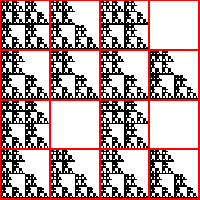
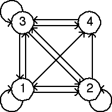

Second Homework Set Answers
2(h)


Note the empty length 2 addresses are 14, 24, and 44. Consequently, the forbidden transitions are
4 → 1,
4 → 2,
and
4 → 4.
These are the missing arrows.
Return to
Homework 2 Practice
.